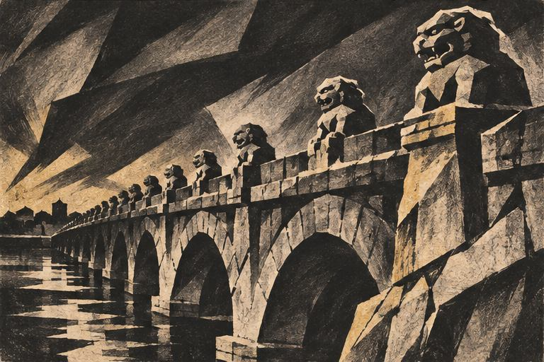
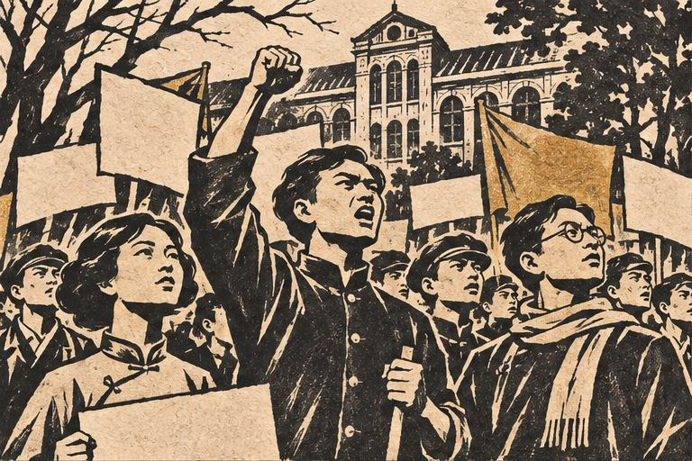
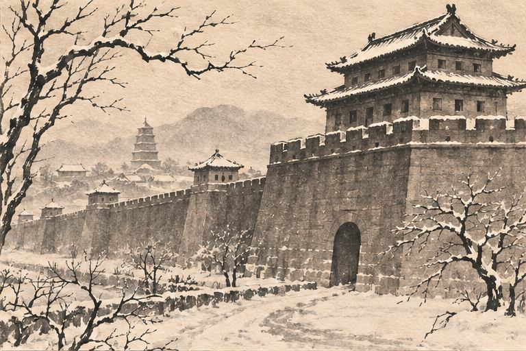
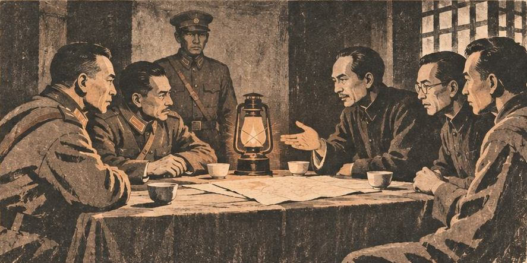
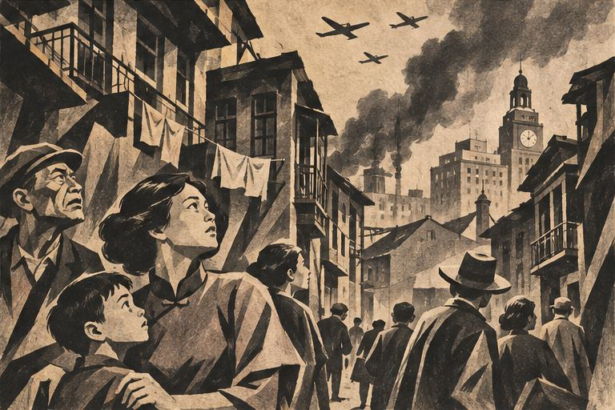
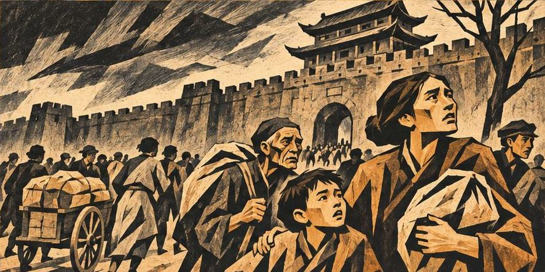

HIST 270 · Chapter 25 · Block 4
1936–1937
Why did two former enemies agree to fight Japan together?

German Expressionist reconstructionBy 1936 · Recap
Concept · Imperialism and occupation
Imperialism is the extension of power over other peoples or territories.
Military occupation occurs when an army establishes control over an area.
1936 · Nationalist China
1936 · Nationalist China

December 1936 · Xi’an

December 1936 · Xi’an

Concept · Truce and alliance
A truce suspends fighting.
An alliance commits parties to cooperate toward a shared goal.
Xi’an made later cooperation possible.
July 1937 · Near Beijing
Concept · Second Sino-Japanese War
Sino-Japanese means involving China and Japan.
This war began on a full scale in 1937 and lasted until Japan’s surrender in 1945.
August 1937 · Shanghai

Concept · Second United Front
The Nationalists and Communists formalized cooperation in September 1937.
They shared the aim of resisting Japan and retained separate political organizations.
1937 · Comparison
November–December 1937
Marco Polo Bridge
Battle for Shanghai
Fall of Nanjing
December 1937 · Nanjing

Concept · Civilian and prisoner of war
A civilian is a person outside the armed forces.
A prisoner of war is a captured member of an enemy armed force.
Both groups were targets of mass violence at Nanjing.
1937 · Synthesis